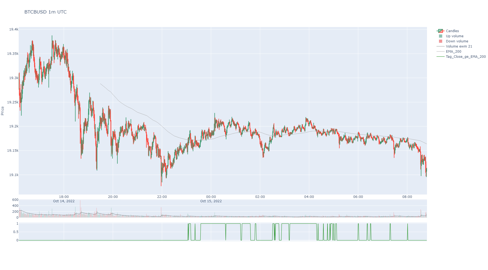
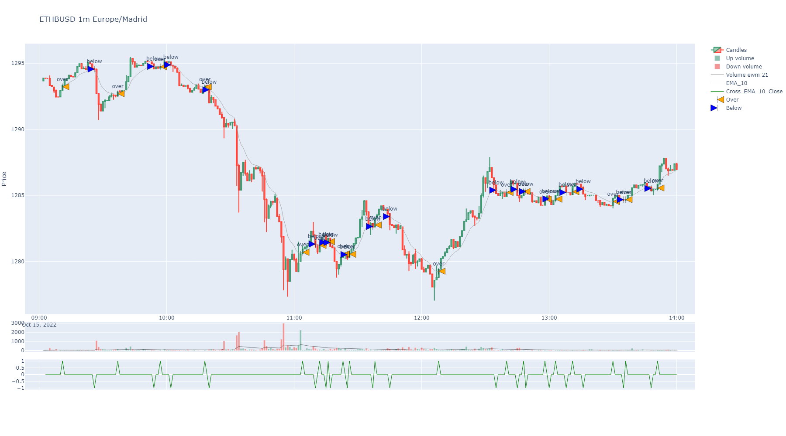

Symbol Strategy¶
Strategy and backtesting methods mixed into the Symbol class: signal tagging,
cross detection, stop loss/target, ROI calculation.
Strategy and backtesting methods for Symbol class.
Classes:
Strategy, tagging and backtesting methods for Symbol. |
- class SymbolStrategy[source]¶
Bases:
objectStrategy, tagging and backtesting methods for Symbol.
Methods:
backtesting(actions_col[, target_column, ...])Simulates buys and sells using labels in a tagged column with actions.
roi([column])It returns win or loos percent for a evaluation column.
profit_hour([column])It returns win or loos quantity per hour.
tag(column, reference[, relation, ...])It tags values of a column/serie compared to other serie or value by methods gt,ge,eq,le,lt as condition.
cross(slow[, fast, cross_over_tag, ...])It tags crossing values from a column/serie (fast) over a serie or value (slow).
shift(column[, window, strategy_group, ...])It shifts a candle ahead by the window argument value (or backwards if negative)
merge_columns(main_column, other_column[, ...])Predominant serie will be filled nans with values, if existing, from the other serie.
clean_in_out(column[, in_tag, out_tag, ...])It cleans a serie with in and out tags by eliminating in streaks and out streaks.
set_strategy_groups(column, group[, ...])Returns strategy_groups for BinPan DataFrame.
Returns column names starting with "Strategy".
strategy_from_tags_crosses([columns, ...])Checks where all tags and cross columns get value "1" at the same time.
ffill_window(column[, window, inplace, ...])It forward fills a value through nans a window ahead.
- backtesting(actions_col: str | int, target_column: str | Series = None, stop_loss_column: str | Series = None, entry_filter_column: str | Series = None, fixed_target: bool = True, fixed_stop_loss: bool = True, base: float = 0, quote: float = 1000, priced_actions_col: str = 'Open', label_in=1, label_out=-1, fee: float = 0.001, evaluating_quote: str = None, short: bool = False, inplace=True, suffix: str = None, colors: list = None) DataFrame | Series[source]¶
Simulates buys and sells using labels in a tagged column with actions. Actions are considered before the tag, in the next candle using priced_actions_col price of that candle before.
- Parameters:
target_column – Column with data for operation target values.
stop_loss_column – Column with data for operation stop loss values.
entry_filter_column (pd.Series | str) – A serie or colum with ones or zeros to allow or avoid entries.
fixed_target (bool) – Target for any operation will be calculated and fixed at the beginning of the operation.
fixed_stop_loss (bool) – Stop loss for any operation will be calculated and fixed at the beginning of the operation.
base (float) – Base inverted quantity.
quote (float) – Quote inverted quantity.
priced_actions_col (str | int) – Columna name or index with prices to use when action label in a row.
label_in (str | int) – A label consider as trade in trigger.
label_out (str | int) – A label consider as trade out trigger.
fee (float) – Fees applied to the simulation.
evaluating_quote (str) – A quote used to convert value of the backtesting line for better reference.
short (bool) – Backtest in short mode, with in as shorts and outs as repays.
inplace (bool) – Make it permanent in the instance or not.
suffix (str) – A decorative suffix for the name of the column created.
colors (list) – Defaults to red and green.
- Return pd.DataFrame | pd.Series:

- roi(column: str = None) float[source]¶
It returns win or loos percent for a evaluation column. Just compares first and last value increment by the first price in percent. If not column passed, it will search for an Evaluation column.
- Parameters:
column (str) – A column in the BinPan’s DataFrame with values to check ROI (return of inversion).
- Return float:
Resulting return of inversion.
- profit_hour(column: str = None) float[source]¶
It returns win or loos quantity per hour. Just compares first and last value. Expected datetime index. If not column passed, it will search for an Evaluation column.
- Parameters:
column (str) – A column in the BinPan’s DataFrame with values to check profit with expected datetime index.
- Return float:
Resulting return of inversion.
- tag(column: str | int | Series, reference: str | int | float | Series, relation: str = 'gt', match_tag: str | int = 1, mismatch_tag: str | int = 0, strategy_group: str = '', inplace=True, suffix: str = '', color: str | int = 'green') Series[source]¶
It tags values of a column/serie compared to other serie or value by methods gt,ge,eq,le,lt as condition.
- Parameters:
column (pd.Series | str) – A numeric serie or column name or column index. Default is Close price.
reference (pd.Series | str | int | float) – A number or numeric serie or column name.
relation (str) – The condition to apply comparing column to reference (default is greater than): eq (equivalent to ==) - equals to ne (equivalent to !=) - not equals to le (equivalent to <=) - less than or equals to lt (equivalent to <) - less than ge (equivalent to >=) - greater than or equals to gt (equivalent to >) - greater than
match_tag (int | str) – Value or string to tag matched relation.
mismatch_tag (int | str) – Value or string to tag mismatched relation.
strategy_group (str) – A name for a group of columns to assign to a strategy.
inplace (bool) – Permanent or not. Default is false, because of some testing required sometimes.
suffix (str) – A string to decorate resulting Pandas series name.
color (str | int) – A color from plotly list of colors or its index in that list.
- Return pd.Series:
A serie with tags as values.
import binpan sym = binpan.Symbol('btcbusd', '1m') sym.ema(window=200, color='darkgrey') # comparing close price (default) greater or equal, than exponential moving average of 200 ticks window previously added. sym.tag(reference='EMA_200', relation='ge') sym.plot()

- cross(slow: str | int | float | Series, fast: str | int | Series = 'Close', cross_over_tag: str | int = 1, cross_below_tag: str | int = -1, echo=0, non_zeros: bool = True, strategy_group: str = None, inplace=True, suffix: str = '', color: str | int = 'green') Series[source]¶
It tags crossing values from a column/serie (fast) over a serie or value (slow).
- Parameters:
slow (pd.Series | str | int | float) – A number or numeric serie or column name.
fast (pd.Series | str) – A numeric serie or column name or column index. Default is Close price.
cross_over_tag (int | str) – Value or string to tag matched crossing fast over slow.
cross_below_tag (int | str) – Value or string to tag crossing slow over fast.
non_zeros (bool) – Result will not contain zeros as non tagged values, instead will be nans.
echo (int) – It tags a fixed amount of candles forward the crossed point not including cross candle. If echo want to be used, must be used non_zeros.
strategy_group (str) – A name for a group of columns to assign to a strategy.
inplace (bool) – Permanent or not. Default is false, because of some testing required sometimes.
suffix (str) – A string to decorate resulting Pandas series name.
color (str | int) – A color from plotly list of colors or its index in that list.
- Return pd.Series:
A serie with tags as values. 1 and -1 for both crosses.
import binpan sym = binpan.Symbol(symbol='ethbusd', tick_interval='1m', limit=300, time_zone='Europe/Madrid') sym.ema(window=10, color='darkgrey') sym.cross(slow='Close', fast='EMA_10') sym.plot(actions_col='Cross_EMA_10_Close', priced_actions_col='EMA_10', labels=['over', 'below'], markers=['arrow-bar-left', 'arrow-bar-right'], marker_colors=['orange', 'blue'])

- shift(column: str | int | Series, window=1, strategy_group: str = '', inplace=True, suffix: str = '', color: str | int = 'grey') Series[source]¶
It shifts a candle ahead by the window argument value (or backwards if negative)
- Parameters:
window (int) – Number of candles moved ahead.
strategy_group (str) – A name for a group of columns to assign to a strategy.
inplace (bool) – Permanent or not. Default is false, because of some testing required sometimes.
suffix (str) – A string to decorate resulting Pandas series name.
color (str | int) – A color from plotly list of colors or its index in that list.
- Return pd.Series:
A serie with tags as values.
- merge_columns(main_column: str | int | Series, other_column: str | int | Series, sign_other: dict = None, strategy_group: str = '', inplace=True, suffix: str = '', color: str | int = 'grey') Series[source]¶
Predominant serie will be filled nans with values, if existing, from the other serie.
Same kind of index needed.
- Parameters:
main_column (pd.Series) – A serie with nans to fill from other serie.
other_column (pd.Series) – A serie to pick values for the nans.
sign_other (dict) – Replace values by a dict for the “other column”. Default is: {1: -1}
strategy_group (str) – A name for a group of columns to assign to a strategy.
inplace (bool) – Permanent or not. Default is false, because of some testing required sometimes.
suffix (str) – A string to decorate resulting Pandas series name.
color (str | int) – A color from plotly list of colors or its index in that list.
- Return pd.Series:
A merged serie.
- clean_in_out(column: str | int | Series, in_tag=1, out_tag=-1, strategy_group: str = '', inplace=True, suffix: str = '', color: str | int = 'grey') Series[source]¶
It cleans a serie with in and out tags by eliminating in streaks and out streaks.
Same kind of index needed.
- Parameters:
column (pd.Series) – A column to clean in and out values.
in_tag – Tag for in tags. Default is 1.
out_tag – Tag for out tags. Default is -1.
strategy_group (str) – A name for a group of columns to assign to a strategy.
inplace (bool) – Permanent or not. Default is false, because of some testing required sometimes.
suffix (str) – A string to decorate resulting Pandas series name.
color (str | int) – A color from plotly list of colors or its index in that list.
- Return pd.Series:
A merged serie.
- set_strategy_groups(column: str, group: str, strategy_groups: dict = None) dict[source]¶
Returns strategy_groups for BinPan DataFrame.
- get_strategy_columns() list[source]¶
Returns column names starting with “Strategy”.
- Return dict:
Updated strategy groups of columns.
- strategy_from_tags_crosses(columns: list = None, strategy_group: str = '', matching_tag=1, method: str = 'all', tag_reversed_match: bool = False, inplace=True, suffix: str = '', color: str | int = 'magenta', reversed_match=-1) Series[source]¶
Checks where all tags and cross columns get value “1” at the same time. And also gets points where all tags gets value of “0” and cross columns get “-1” value.
- Parameters:
columns (list) – A list of Tag and Cross columns with numeric o 1,0 for tags and 1,-1 for cross points.
strategy_group (str) – A name for a group of columns to restrict application of strategy. If both columns and strategy_group passed, a interjection between the two arguments is applied.
tag_reversed_match (bool) – If enabled, all zeros or minus ones tag and cross columns are interpreted as reversed match, this will enable tagging those.
matching_tag (any) – A tag to search for the strategy where will be revised method for matched rows.
method (str) – Can be ‘all’ or ‘any’. It produces a match when all or any columns are matching tags.
reversed_match (any) – A tag for the all/any not matched strategy rows.
inplace (bool) – Permanent or not. Default is false, because of some testing required sometimes.
suffix (str) – A string to decorate resulting Pandas series name.
color (str | int) – A color from plotly list of colors or its index in that list.
- Return pd.Series:
A serie with “1” value where all columns are ones and “-1” where all columns are minus ones.
- ffill_window(column: str | int | Series, window: int = 1, inplace=True, replace=False, suffix: str = '', color: str | int = 'blue')[source]¶
It forward fills a value through nans a window ahead.
- Parameters:
window (int) – Times values are shifted ahead. Default is 1.
replace (bool) – Permanent replace for a column with results.
inplace (bool) – Permanent or not. Default is false, because of some testing required sometimes.
suffix (str) – A string to decorate resulting Pandas series name.
color (str | int) – A color from plotly list of colors or its index in that list.
- Return pd.Series:
A series with index adjusted to the new shifted positions of values.
{kind=link}
{kind=link}